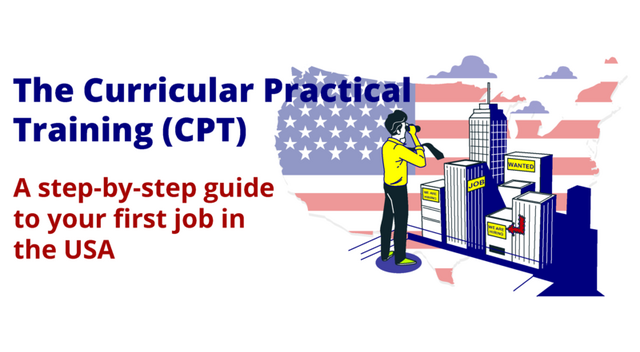

What is CPT?
CPT allows F-1 students to work off-campus in a role directly related to their major. It must be an integral part of your curriculum and approved by OISS before you begin.
- Requires a job/internship offer
- Must be employer- and date-specific
- Applies to both paid and unpaid roles